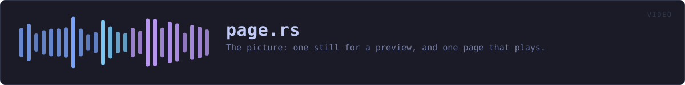

crates/veilvoice-video/src/page.rs
veilvoice-video · 1029 lines · read the source
The picture: one still for a preview, and one page that plays.
Why a page rather than a video file
It needs nothing installed, it contacts nothing, and it opens on every browser and every phone. A video file needs an encoder this project does not ship — see crate::ffmpeg — so the page is the thing that always exists and the file is the extra.
It is also the honest artefact for this particular job. What is being drawn is a waveform, some circles and a title: flat colour, hard edges and text. That is what vector graphics are for, and it stays sharp at any size on any screen rather than being resampled from a fixed grid of pixels.
The layout, and why the padding is a setting
A title across the top, a row of circles under it — one per speaker, in their colour, with their name beneath — and the waveform along the bottom with a line that moves through it. Look::padding is a setting because the same picture is wanted at very different sizes: a thumbnail wants little and a full-screen render wants a lot, and a fixed margin looks wrong at one end or the other.
Everything user-supplied is escaped
Names and titles are typed by a person and end up inside markup. They are escaped on the way in, every time, through one function. A name containing </text> would otherwise end the element it is in and the rest of the file would be whatever that person wrote — which is a nuisance in a local file and a real problem in one that gets sent to somebody.
The script, and what happens without it
Lighting the circle of whoever is speaking means knowing where the audio has got to, and only the audio element knows that. There is a small inline script — no file, no library, no network — and a <noscript> saying what it does. Without it the audio plays, the subtitles appear, the waveform is drawn and the circles simply stay dim.
In plain words
Draws the picture: a waveform, a circle for each person that lights up when it is their turn, and the names.
It produces two things. A still, so you can see what you will get before anything is rendered, and a self-contained web page that plays the veiled audio with the picture moving along beside it.
A page rather than a video file, because a page needs nothing installed to watch and can be opened by anybody. If you want an actual video file, the command to make one is printed for you.
WHAT THIS FILE CONTAINS
1029 lines defining 13 functions (8 public), 4 types and 0 constants. Everything below is read out of the source, so it cannot disagree with the code.
The types it owns.
struct Lookline 62 — What the picture looks like.enum Backgroundline 94 — What sits behind the picture.struct Layoutline 175 — Where each part of the picture goes.struct Drawnline 426 — What a render produced, and anything the user should know about it.
What happens when it runs. These are the ways in: public, and nothing else in this file calls them, so they are what an outside caller reaches first.
Look::blackline 103 — Black, for somebody who wants the plainest possible picture.Look::themedline 116 — The same look in another palette.Look::checkedline 137 — Whether these numbers describe a picture that can be drawn.playerline 544 — The self-contained page that plays.
reachesescape,layout,still,background_markup,speaker_markup,data_uri,base64,media_type
WHAT CALLS WHAT
The functions this file defines, and the calls between them. An edge means the callee's name appears, called, inside the caller's body — a syntactic reading, not a type-resolved one.
The same graph as Mermaid source
%%{init: {"theme":"base","themeVariables":{"background":"#1a1b26","primaryColor":"#1f2335","primaryTextColor":"#c0caf5","primaryBorderColor":"#7aa2f7","secondaryColor":"#16161e","tertiaryColor":"#16161e","lineColor":"#737aa2","textColor":"#c0caf5","mainBkg":"#1f2335","nodeBorder":"#7aa2f7","clusterBkg":"#16161e","clusterBorder":"#2f3549","fontFamily":"ui-monospace, SFMono-Regular, Consolas, monospace","fontSize":"14px"}}}%%
flowchart TD
n_default["Look::default<br/>line 81"]
n_black(["Look::black<br/>line 103"])
n_themed(["Look::themed<br/>line 116"])
n_checked(["Look::checked<br/>line 137"])
n_layout["layout<br/>line 193"]
n_escape["escape<br/>line 229"]
n_base64["base64<br/>line 249"]
n_media_type["media_type<br/>line 276"]
n_data_uri["data_uri<br/>line 297"]
n_background_markup["background_markup<br/>line 309"]
n_speaker_markup["speaker_markup<br/>line 358"]
n_still["still<br/>line 440"]
n_player(["player<br/>line 544"])
n_background_markup --> n_data_uri
n_background_markup --> n_escape
n_data_uri --> n_base64
n_data_uri --> n_media_type
n_player --> n_escape
n_player --> n_layout
n_player --> n_still
n_speaker_markup --> n_data_uri
n_speaker_markup --> n_escape
n_still --> n_background_markup
n_still --> n_escape
n_still --> n_layout
n_still --> n_speaker_markup
click n_default href "https://github.com/tilas01/veilvoice/blob/main/crates/veilvoice-video/src/page.rs#L81" "open the source"
click n_black href "https://github.com/tilas01/veilvoice/blob/main/crates/veilvoice-video/src/page.rs#L103" "open the source"
click n_themed href "https://github.com/tilas01/veilvoice/blob/main/crates/veilvoice-video/src/page.rs#L116" "open the source"
click n_checked href "https://github.com/tilas01/veilvoice/blob/main/crates/veilvoice-video/src/page.rs#L137" "open the source"
click n_layout href "https://github.com/tilas01/veilvoice/blob/main/crates/veilvoice-video/src/page.rs#L193" "open the source"
click n_escape href "https://github.com/tilas01/veilvoice/blob/main/crates/veilvoice-video/src/page.rs#L229" "open the source"
click n_base64 href "https://github.com/tilas01/veilvoice/blob/main/crates/veilvoice-video/src/page.rs#L249" "open the source"
click n_media_type href "https://github.com/tilas01/veilvoice/blob/main/crates/veilvoice-video/src/page.rs#L276" "open the source"
click n_data_uri href "https://github.com/tilas01/veilvoice/blob/main/crates/veilvoice-video/src/page.rs#L297" "open the source"
click n_background_markup href "https://github.com/tilas01/veilvoice/blob/main/crates/veilvoice-video/src/page.rs#L309" "open the source"
click n_speaker_markup href "https://github.com/tilas01/veilvoice/blob/main/crates/veilvoice-video/src/page.rs#L358" "open the source"
click n_still href "https://github.com/tilas01/veilvoice/blob/main/crates/veilvoice-video/src/page.rs#L440" "open the source"
click n_player href "https://github.com/tilas01/veilvoice/blob/main/crates/veilvoice-video/src/page.rs#L544" "open the source"
classDef entry fill:#1f2335,stroke:#7aa2f7,color:#c0caf5
class n_black,n_themed,n_checked,n_player entry
classDef api fill:#1f2335,stroke:#7dcfff,color:#c0caf5
class n_layout,n_escape,n_data_uri,n_still api
classDef helper fill:#1f2335,stroke:#bb9af7,color:#c0caf5
class n_default,n_base64,n_media_type,n_background_markup,n_speaker_markup helperThis site loads no third-party script, so it cannot run Mermaid; the diagram above is the same nodes and edges drawn by the generator instead. GitHub renders the source below directly.
ITEMS
| Item | Line | Documentation |
|---|---|---|
Look pub struct | 62 | What the picture looks like. |
Look::default fn | 81 | |
Background pub enum | 94 | What sits behind the picture. |
Look::black pub fn | 103 | Black, for somebody who wants the plainest possible picture. |
Look::themed pub fn | 116 | The same look in another palette. |
Look::checked pub fn | 137 | Whether these numbers describe a picture that can be drawn. |
Layout pub struct | 175 | Where each part of the picture goes. |
layout pub fn | 193 | Work out the layout for a look and a number of speakers. |
escape pub fn | 229 | Escape text for markup. |
base64 fn | 249 | Base64, for embedding an image so the page stays one file. |
media_type fn | 276 | The media type for an image, by extension. |
data_uri pub fn | 297 | Read an image and turn it into a data: URI. |
background_markup fn | 309 | The background element, and anything worth telling the user about it. |
speaker_markup fn | 358 | One speaker's circle and name, as SVG. |
Drawn pub struct | 426 | What a render produced, and anything the user should know about it. |
still pub fn | 440 | A single frame, as standalone SVG. |
player pub fn | 544 | The self-contained page that plays. |